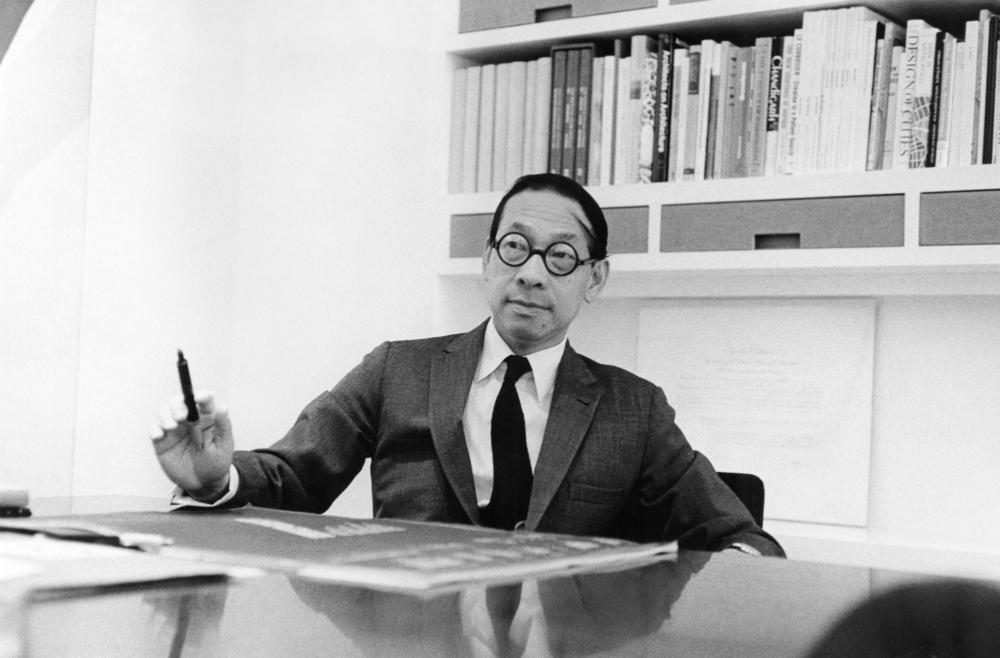

Born in 1917 in China, Ieoh Ming Pei (better known as I.M. Pei) came to the United States in the 1930s to study architecture. However, by the time he graduated, he wasn't able to return to China due to the outbreak of World War II. Pei's designs are seen as a continuation of the International Style made known by architects such as Le Corbusier. Pei sought to combine the modern and the traditional, a goal he dubbed the "impossible dream." But Pei is also renowned for his use of aggressive shapes and practical concepts in brutalism, a branch of the International Style. For example, Pei's massive, rectangular concrete blocks, such as those utilized for his 1967-completed National Center for Atmospheric Research, are obviously influenced by brutalism.
